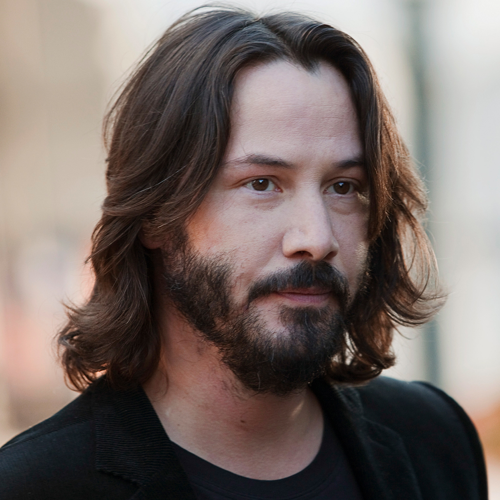

Кіану Чарльз Рівз
Народився 2 вересня 1964 року в Бейруті (Ліван). Мати — Патриція — була англійкою, а батько — Самуель Ноунін Рівз
(наполовину гаваєць, наполовину китаєць) — працював геологом (і не тільки), і тому родині доводилося багато
подорожувати. За рік після весілля молодята переїхали до Австралії, де в них народилася дочка — Кім. Ще одна сестра
Кіану з'явилася на світ у 1976 році.

Канадський актор, режисер, продюсер і музикант.Здобув популярність за виконання головних ролей у декількох
блокбастерах, включаючи комедійну франшизу про Білла і Теда (1989, 1991, 2020); трилер «На гребені хвилі» (1991),
культовий бойовик «Швидкість» (1994) та «Джон Уік» (2014); психологічний трилер «Адвокат Диявола» (1997).
Проте найбільшої слави Рівз зажив за виконання ролей Нео в культовій науково-фантастичній франшизі «Матриця»
(1999—2003) та Джона Костянтина в містичному трилері «Костянтин: Володар темряви» (2005).
Цікаві факти:
- Зріст Кіану— 1,86 м. Його ім'я означає «прохолодний вітерець над горами» на Гаваях.[7]
- Рівз є пристрасним мотоциклістом та вболівальником мотоспорту. Так, лише у 2015 році він особисто відвідав два
Гран-Прі серії MotoGP — у Остіні та Муджелло. Також він є співзасновником компанії «Arch Motorcycle Company»,
яка з 2013 року будує мотоцикли на базі Harley-Davidson та продає за ціною 72 тис.
- У травні 1993 року заарештований у Лос-Анджелесі, Каліфорнія; звинувачений у п'яному водінні
- У 2009 році громадянка Канади Карен Сала заявила, що Кіану Рівз є батьком її чотирьох дітей, і вимагала через
суд виплати аліментів (понад 3 млн доларів). Утім ДНК-тест не підтвердив батьківства Рівза і суд відхилив позов
Карен Сала.
- Вибраний журналом People як один із 50 найкрасивіших людей у світі (1995).